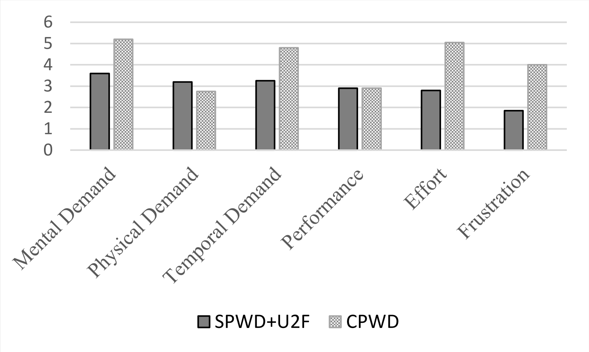

U2F: Complex Passwords are unnecessary

Il est courant d’entendre qu’un bon mot de passe doit respecter plusieurs règles assez contraignantes (comme celles de l’ANSSI) : longueur, diversité…
Dans le cadre de mon mémoire de licence, j’ai comparé l’ergonomie et la sécurité de deux stratégies : un mot de passe conforme aux règles de l’ANSSI, et un mot de passe sans contraintes associée à une clé U2F.
Ce mémoire comprenait :
- La création d’auth-abstractor, une librairie PHP modulaire et compatible avec toute framework permettant d’ajouter un système d’authentification à son site (combinaison configurable et extensible de mot de passe, U2F, e-mail).
- La création d’un site utilisant cette librairie pour évaluer l’ergonomie de différentes méthodes d’authentification et j’ai effectué une étude avec cet outil sur une trentaine de participants.
- La rédaction d’un rapport.
- L’expertise gagné sur U2F m’a permis de présenter la technologie U2F à un Dundee PHP Meetup.